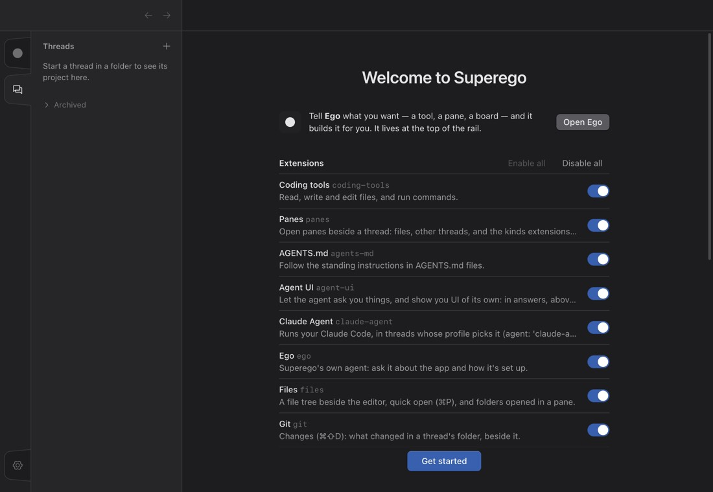
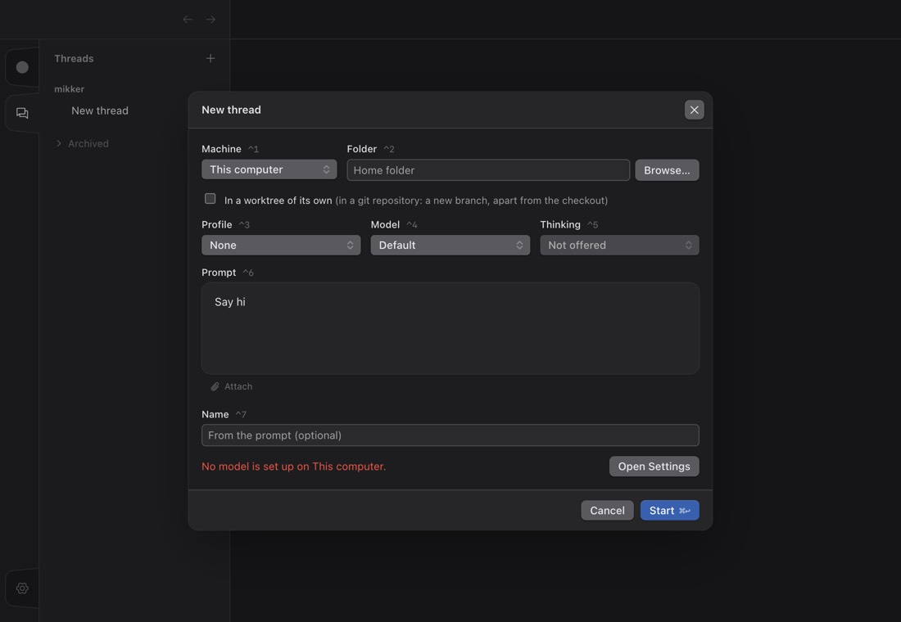
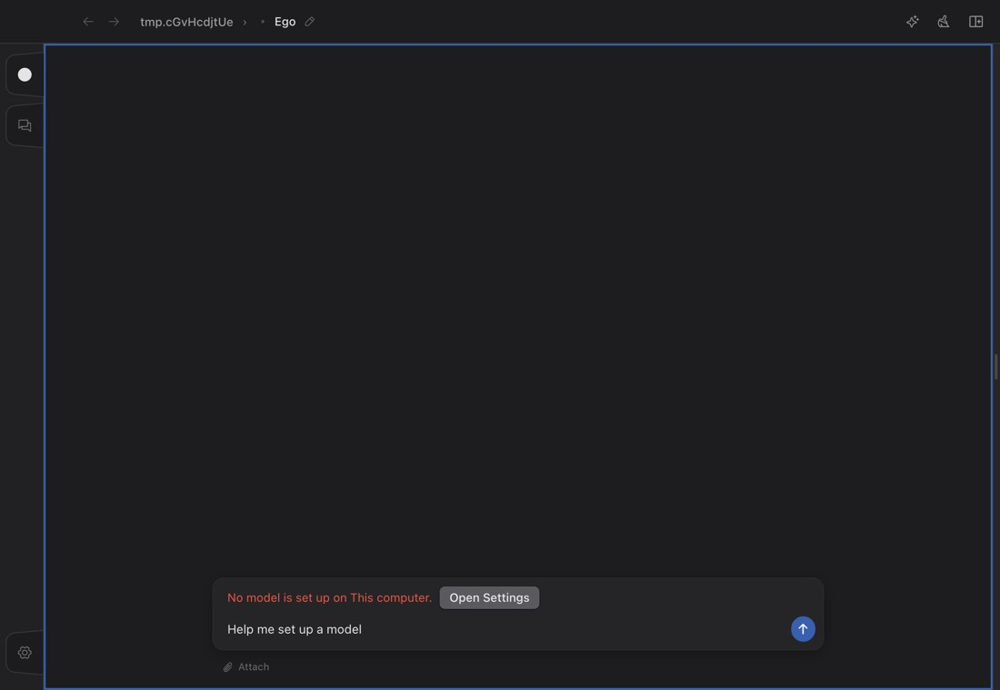
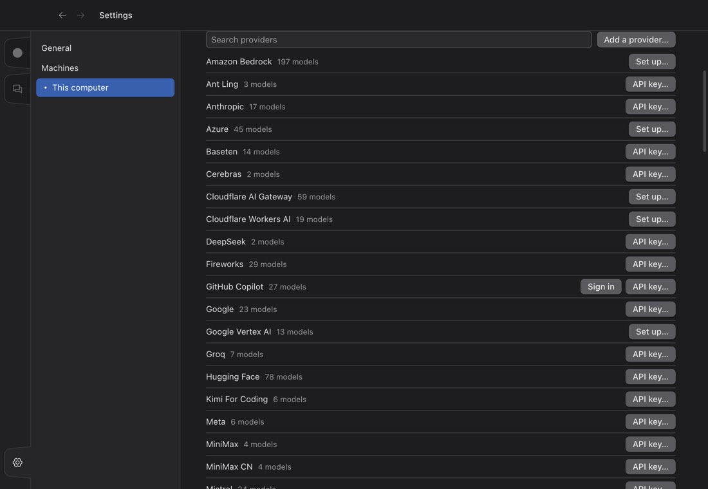
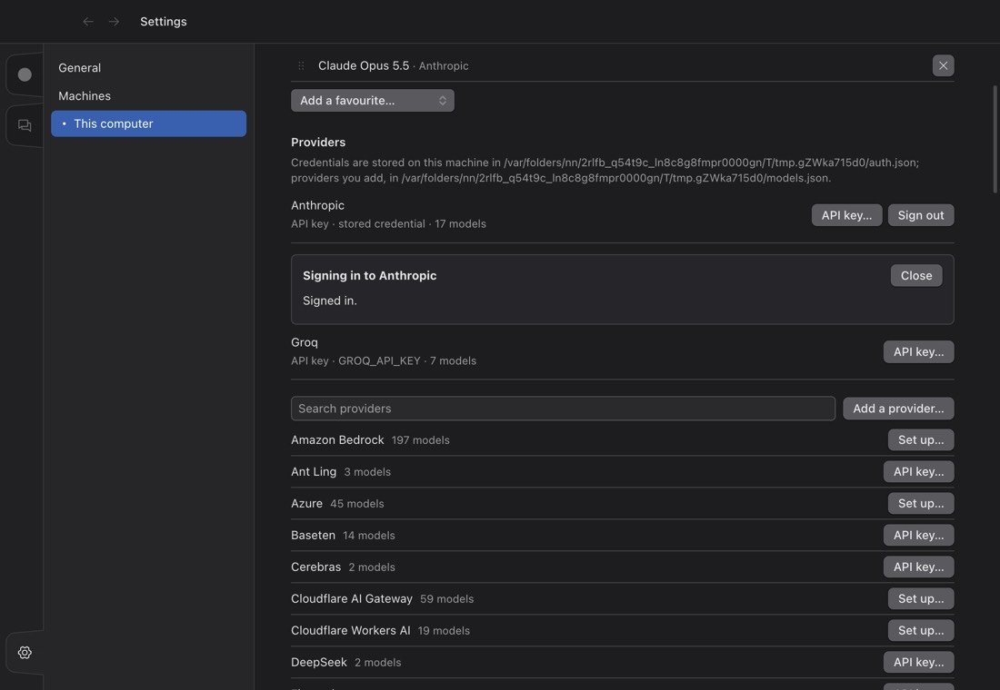
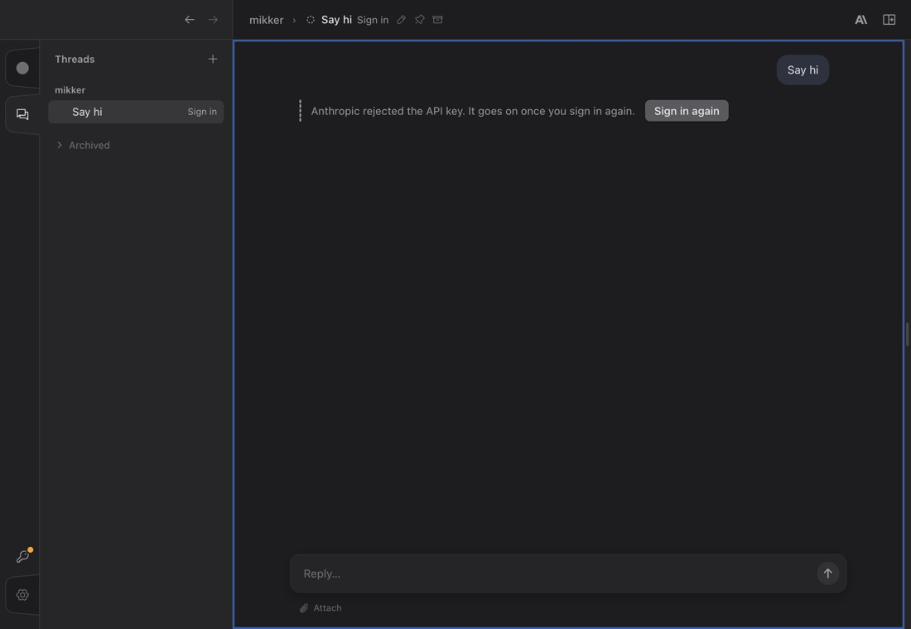

First run: model setup
Four places for the first thing a new user has to do: get a model talking. Each covers picking a way in, what's already found on the machine, the default model and a few favourites, a "Say hi" round trip, and then a first thread in a folder.
- Shows on first run, and whenever no model works on the machine.
- Opens from Settings → "Set up models…", and from the composer or ⌘N when sending fails for lack of a model.
- Per machine: a remote machine you add gets its own (its providers, its Ollama, its
claude). - Found is probed, never touched: keys in the login shell's environment,
claude auth status, Ollama on :11434, LM Studio on :1234. - Claude Code makes a "Claude" profile with
agent: 'claude-agent'. Its sign-in stays Claude Code's. - Extensions leave the first screen: they're all on, and stay in Settings.
What a new user meets today
- The welcome page is about extensions and Ego; nothing says a model is needed. Ego itself can't talk without one.
- No model looks like one: ⌘N says "Default" / "Not offered"; Start makes a thread, then fails, and leaves it behind.
- "No model is set up on This computer. Open Settings" lands on General; Providers is 45 rows, alphabetical, Bedrock first; ChatGPT hides on the OpenAI row.
- Any API key "signs in": nothing tests it until the first real turn fails. Keys in
~/.zshrcare invisible to a Dock-launched app. Ollama and Claude Code need config knowledge.






Who does the thinking?
Superego runs on a model you bring.
Found on this computer This computer
Or
It talks.
Default model
Starred ones come first in the model menus.
What works
Everything found is one click; the six ways in are named the way people think of them, not as 45 vendors. It replaces the welcome page outright, so there's one first screen, and "Set up models…" reopens the same page.
What risks
It lives in the main column, so the sidebar's "Select or start a thread" sits beside it; reopened later it's a page you navigate to and from. OAuth (ChatGPT, Copilot) still needs a browser hop shown inline.
Pick this if
You want the first screen to be a setup page, calm and complete, that hands over to the first thread.
I need a model to think with. This computer
What works
One component fixes every dead end: Ego, ⌘N and any thread show the same card instead of "No model… Open Settings". First launch opens Ego with it, so Ego's first words are its own hello. No new page to find again.
What risks
The test call is a real turn in a real thread (Ego's, here), so a failing key shows as an error in a thread, not in setup. Default and favourites get a line each; a key field or OAuth hop has to open inside the card.
Pick this if
You'd rather never send people somewhere else to set up: fix it where they tried to type.
Who does the thinking?
Your default model
★ puts a model first in the menus.
It talks.
What works
The most obvious path: one decision a screen, a visible end, the test as its own step so a bad key fails there and not in a thread. A sheet reopens the same from Settings, ⌘N or the composer without leaving where you were.
What risks
Modal and wizard-ish: three screens for what's often one click (a found key). Claude Code skips step 2 (Claude Code picks its own model), so the steps aren't always three.
Pick this if
You want new users led by the hand, with a clear "done", over speed for those who already have a key.
First, a model to think with
What works
No new surface: the dialog people use every day learns to say "no model" and fix it; the folder is already there, so the first thread is one Start away. "Connect another…" in every model menu keeps it findable later.
What risks
A big form gets bigger; a key field or a ChatGPT browser hop inside a dialog is cramped. The test is a badge, and setting a machine-wide default from a per-thread field blurs the two. Ego and an existing thread still need their own fix.
Pick this if
Getting to the first thread fast matters more than a setup moment of its own.
How to pick a direction
They combine: whichever is the first screen, B's card can still replace "No model… Open Settings" in the composer.